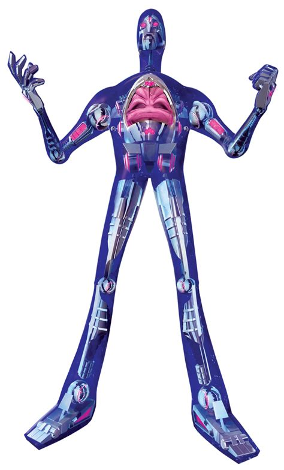
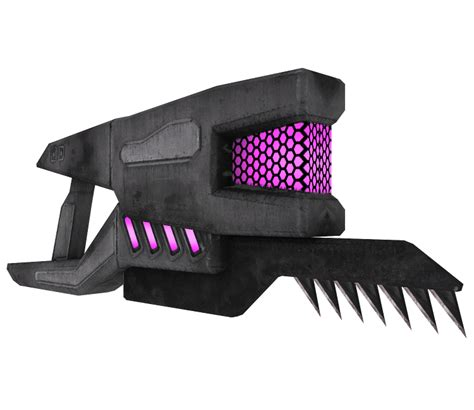
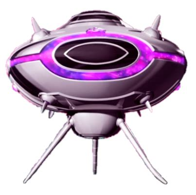
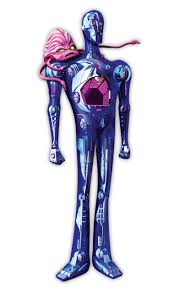
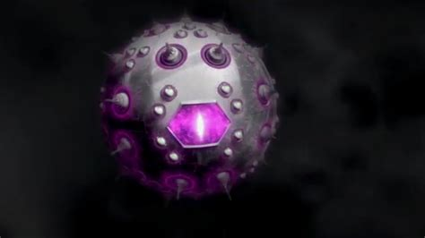
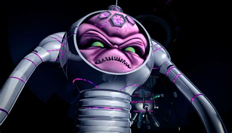
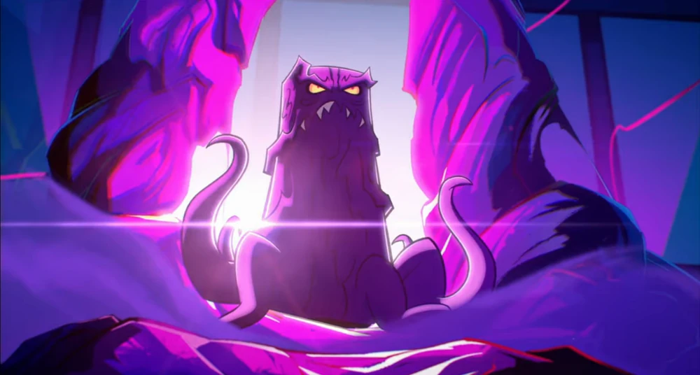
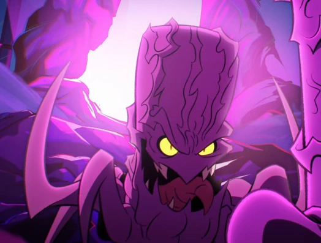
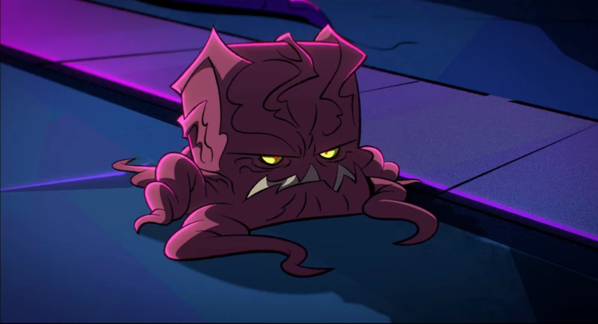
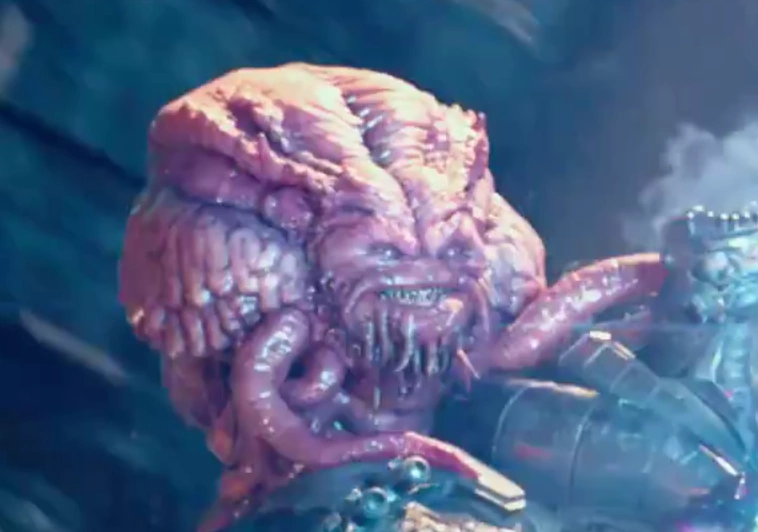

The Kraang
Introduction/Origin
The Kraang, in most depictions, are invaders from another dimension (Dimension X) who tried to inhabit earth millions of years ago, but found it, and it's environment toxic, or depending on the series, were locked away, or simply just left back to Dimension X. In many variations, The Kraang were the reason for human evolution. It is unknown where their technology came from, in some versions they stole it, in others they made their own. every Kraang across all dimensions (every TMNT universe is connected) are linked through their dimensional portal, and can travel between them, as shown in the 2012 show, where Kraang (1987) appeared
What Makes them so dangerous
One factor that makes this species dangerous is their technology and near endless number of soldiers. The Kraang are dangerous due to their supply of mutagen, which causes mutations in anything it touches which us used to create monsters and weapons.
The main fear factor is their technology and weaponry which includes things such as:
- Stealth Ships
- Laser Guns
- Drones
- Footbots
- Biotroids
- FootBots
- Technodrome
- Mutagen
| Image | Description |
|---|---|
|  | Slow firing rate weapon used by Khe Kraang |
|  | Ship, used by The Kraang for transport/smuggling |
|  | Kraang Biotroid used as a shell for earth missions |
|  | Kraang Technodrome used as weapon of mass destruction |
Most powerful Kraang/Utrom
-
Kraang Prime:
By far the most powerful form of The Kraang. Kraang Prime is over 10x the size of every other Kraang. This is due to experemintations on himself. Kraang Prime has access to things like dimensional travel, unstable mutagen, endless soldiers and the technodrome

-
Kraang Sub-Prime
Just below the top spot. Kraang Sub-Prime is second in command for this specific universes Kraang, he has access to technological enhancements, cyborg suits, rockets, and his own personal mech suit equipped with hundreds of weapons and is also capable of opening dimensional portals. -
Kraang One/Two/Three
These Kraang are dangerous due to them having similar intelligence and the ability to work as a team with one another. They have been shown to have access to inter dimensional travel, their own technodrome and the ability to create "Kraang Zombies" that they can control
 -
Paramount Kraang:
This variant is shown to be deadly through overpowering and outsmarting his universes Shredder, and even getting the drop on him. He is shown to have his own technodrome, the downside being it needs to gather its own organic material to form, he is shown to have his "Mandroid" mech suit.


Fun Trivia
The versions of Kraang, known as Kraang Sub-Prime and Kraang (1987) are recognised as cousins.
Kraang isn't the name of the species. The species is known as "The Utrom" and they are not all bad.
Many Kraang have access to the multiverse, and have been seen in several other universes, Like DC or power rangers.
The name of the antagonist in the most recent movie, is "Cynthia Utrom" possibly hinting at her being a Kraang Droid
Table of Statistic Rating
| Category | Rating |
|---|---|
| Strength | 3/10 |
| Tech | 10/10 |
| Defense | 7/10 |
| Adaptability | 5/10 |
| Threat level(Single) | 2/10 |
| Threat level(Group) | 7/10 |